Corrections techniques
Toutes les corrections techniques de mes coachs (ma coach principale, et une 2e coach le 25/09), de juillet à octobre 2026, classées par exercice. Mise à jour le 26/10.
English version · Cadre orange = moi (ma vidéo ou une capture d'une coach) · Cadre vert = démo d'une coach
Pour tous les exercices
- Tempo : environ 2–3 s à la descente, pause quand c'est demandé, environ 1 s à la montée
- Garder la tension : ne pas poser la charge entre les répétitions ; repos seulement à la fin de la série
- Aller proche de l'échec : à 12 répétitions propres, augmenter la charge et redescendre à 8
- La technique avant la charge : si la technique se dégrade sur les dernières répétitions, arrêter ou alléger
- Respiration : expirer sur l'effort, inspirer au retour
- Filmer de profil et de plus loin (grand angle 0,5× si le téléphone l'a), pour qu'on voie le dos
- Jours de repos : au moins 1 jour entre deux séances full body. Deux jours d'affilée seulement en bas du corps + haut du corps
- Si tu sautes une partie de séance, ne la rattrape pas le lendemain (15/10)
- Bilan hebdomadaire au plus tard le vendredi, samedi matin maximum : les coachs l'analysent ensemble le samedi (24/10)
Hip thrust
Fessiers · barre / Smith / machine
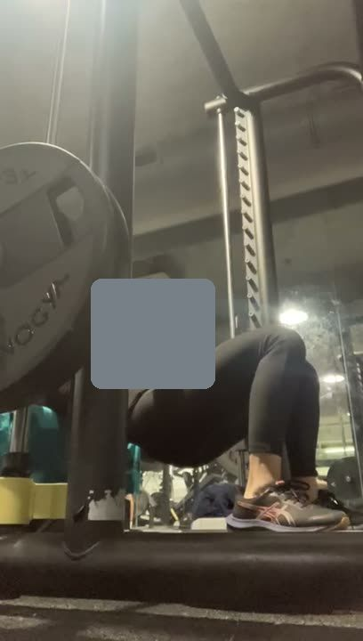
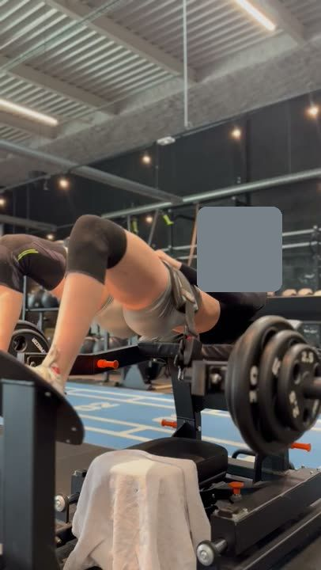
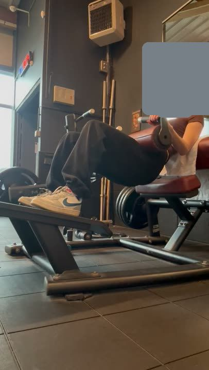
Corrections
Ce que veut dire « monter avec les fessiers » (réponse de la coach, 26/10) : en montant, serre les fessiers et laisse-les te faire monter. Le haut du corps monte en même temps que le bassin. Sur tes vidéos, ton dos partait d'abord en arrière et tes fesses suivaient, donc c'est ton dos qui sauvait la charge. Ton dos ne doit pas arriver allongé sur le banc avant que les fesses montent.
⚠︎ Pas de charge en plus pour l'instant (21/10) : corrige d'abord la hauteur du bassin en haut.
Fentes bulgares
Fessiers · haltères / Smith
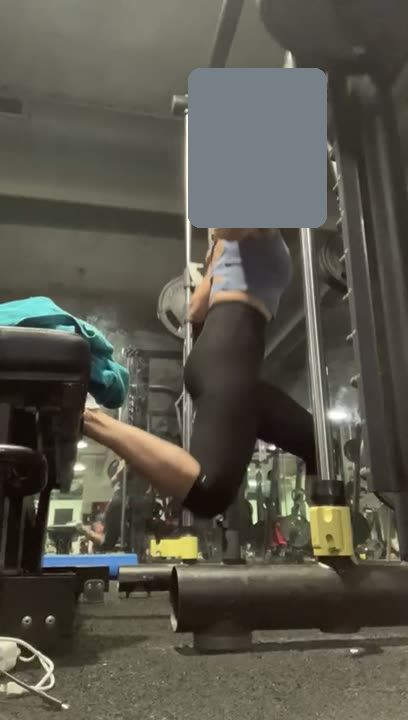
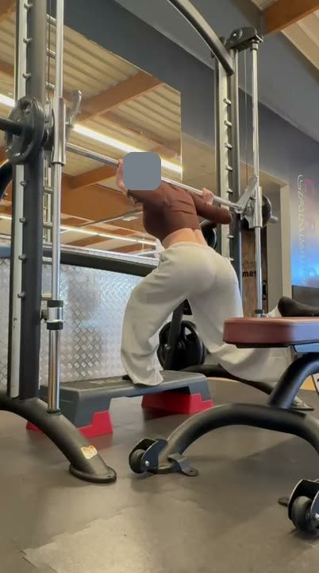
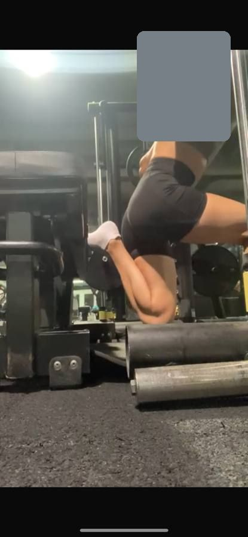
Corrections
⚠︎ Douleur au genou = trop lourd ou pas assez gainée : descends d'un poids.
Soulevé de terre roumain (RDL)
Fessiers et ischios · Smith / haltères
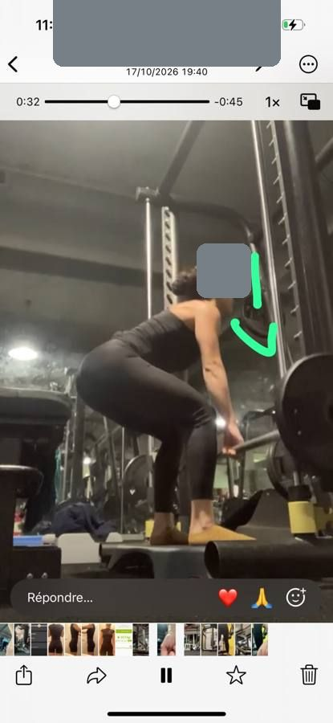
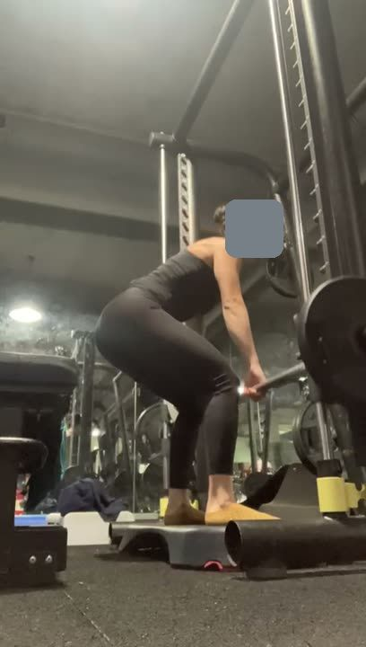
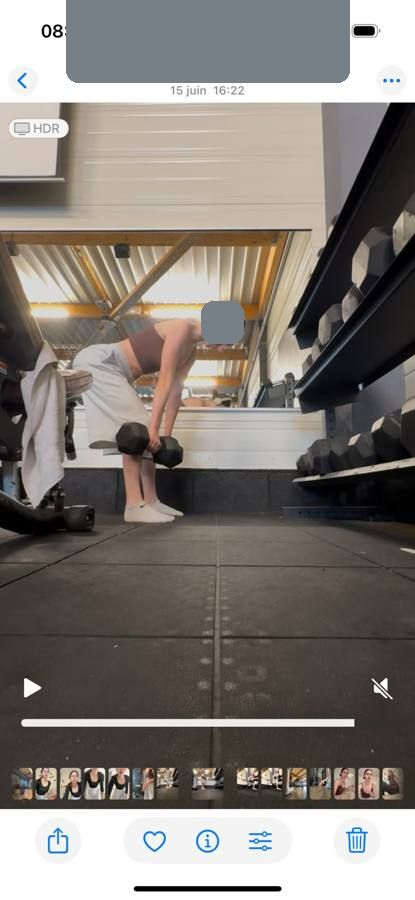
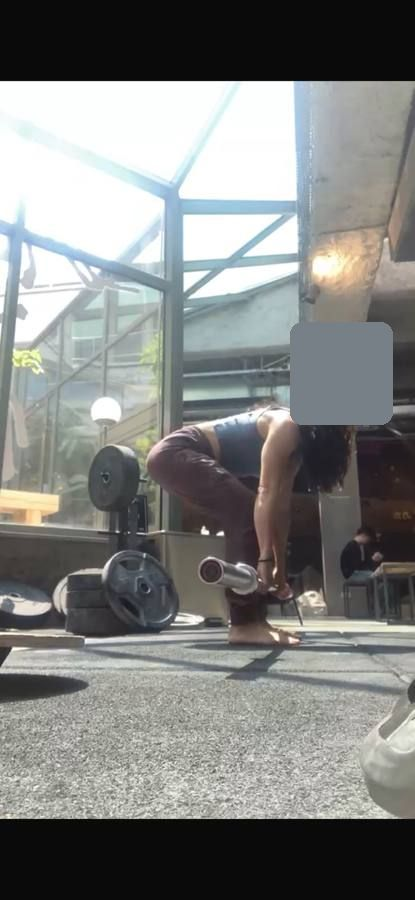
Corrections
⚠︎ Si la Smith t'empêche de pousser les fesses en arrière, essaie avec des haltères.
Squat
Smith / barre
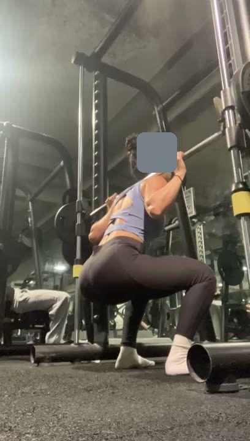
Corrections
⚠︎ Butée de sécurité un cran plus bas ; ne descends pas jusqu'au sol. Pas de charge en plus tant que les genoux ne restent pas alignés (18/09).
Step-up / kickback à la poulie
Fessiers · banc à côté de la poulie
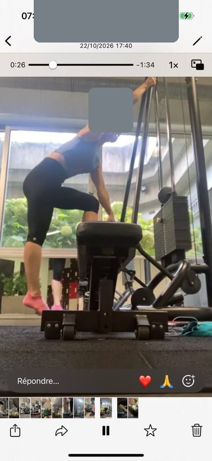
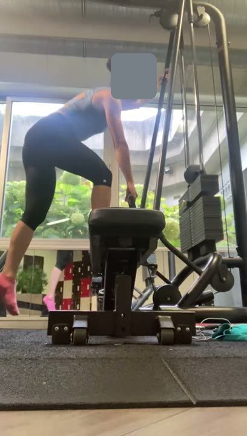
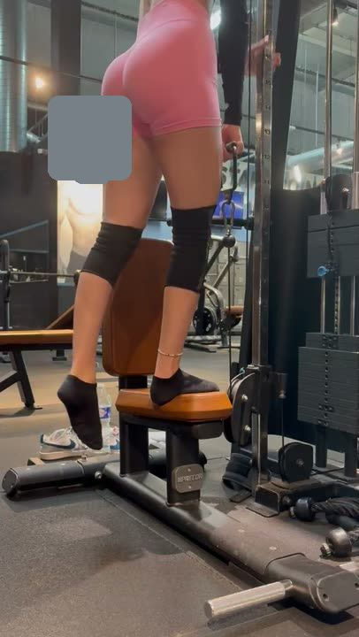
Corrections
⚠︎ Pour les fessiers, le but est d'aller loin en arrière, pas vers le sol.
Kickback à la poulie
Fessiers
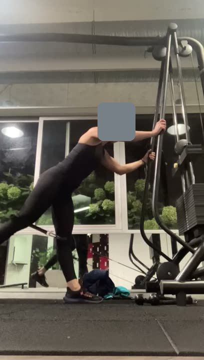
Corrections
Presse à cuisses
Fessiers et jambes
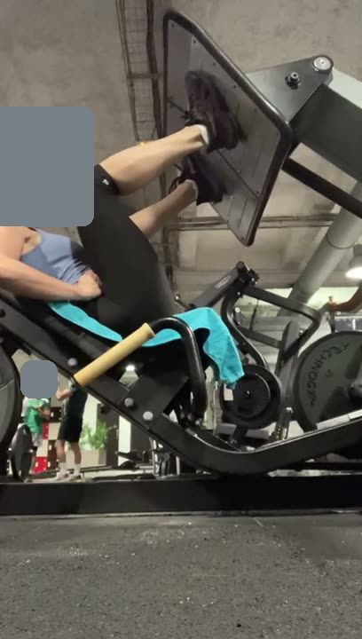
Corrections
Leg curl assis
Ischios
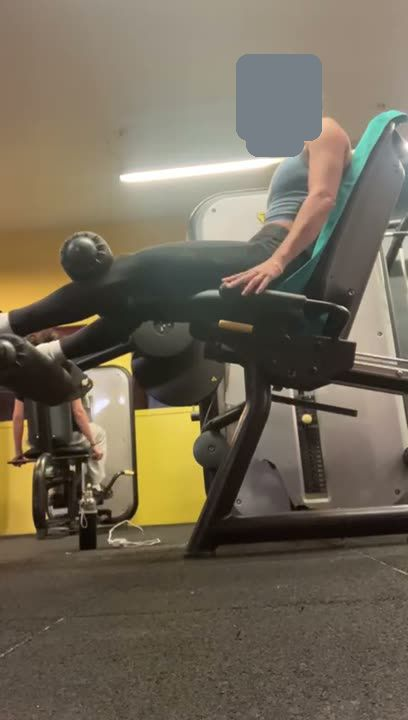
Corrections
Machine abducteurs
Fessiers
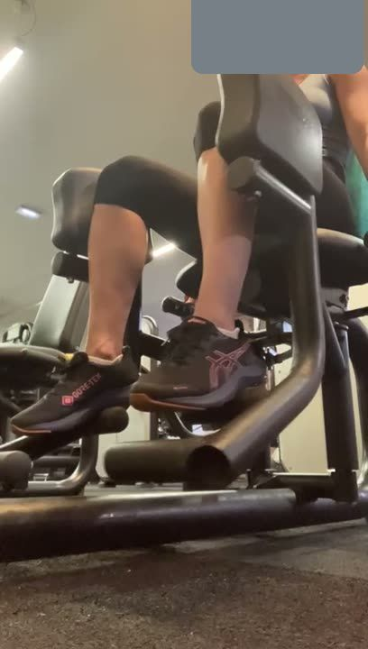
Corrections
Extension lombaire
Fessiers · banc avec boudin
Corrections
Tirage vertical
Dos
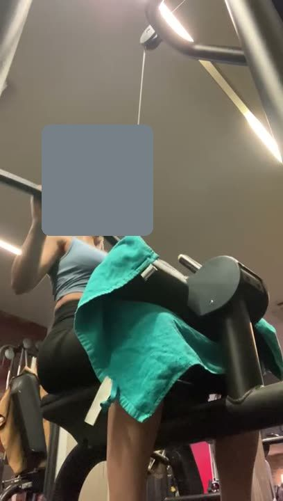
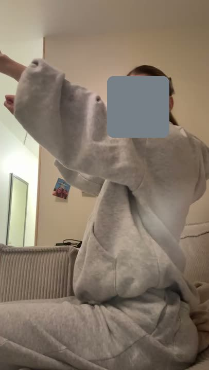
Corrections
Tirage horizontal à la poulie
Dos
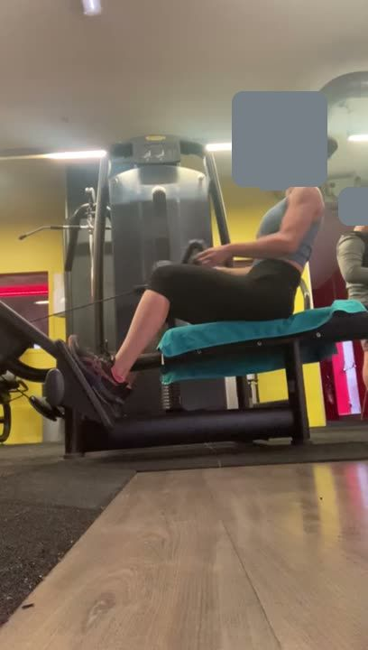
Corrections
Rowing buste penché
Dos · barre / haltères
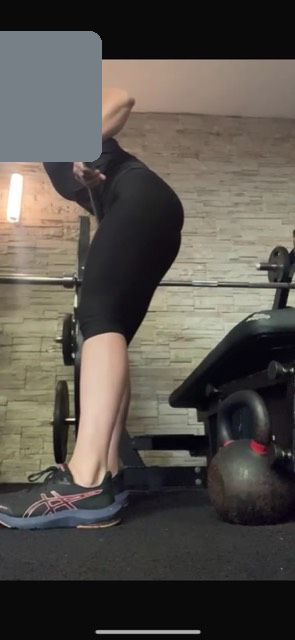
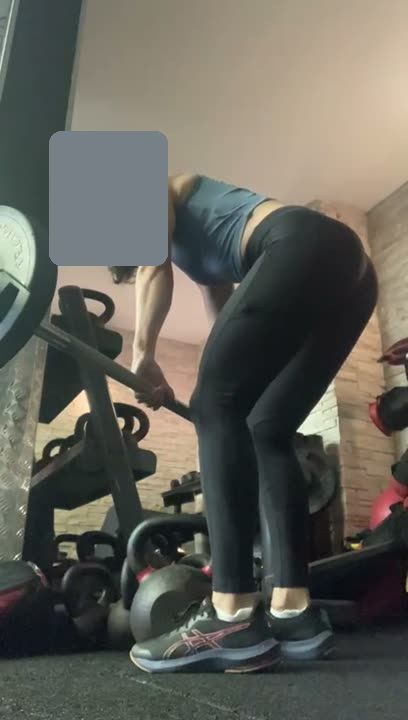
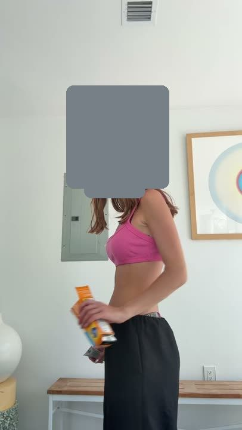
Corrections
Face pull
Épaules et haut du dos · assise
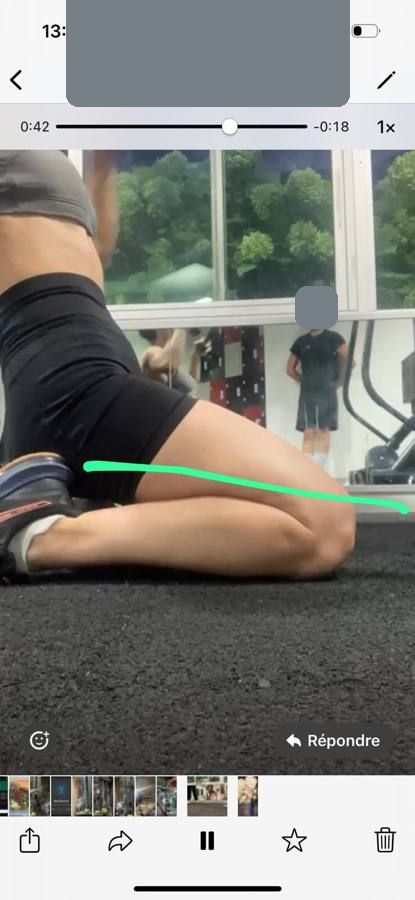
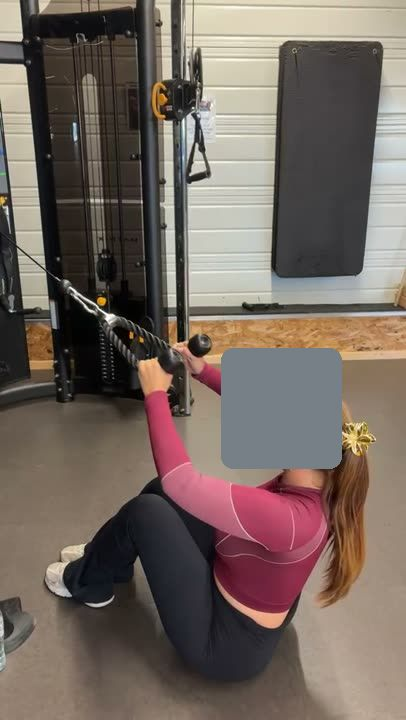
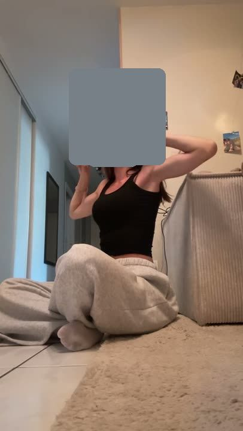
Corrections
Développé épaules haltères
Épaules
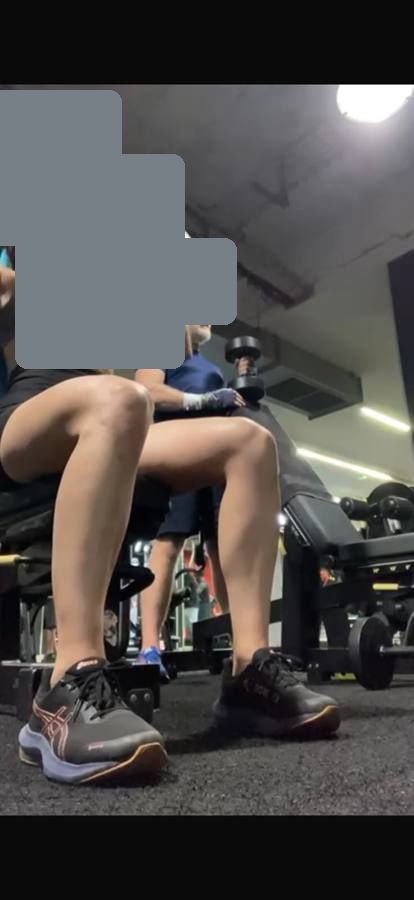
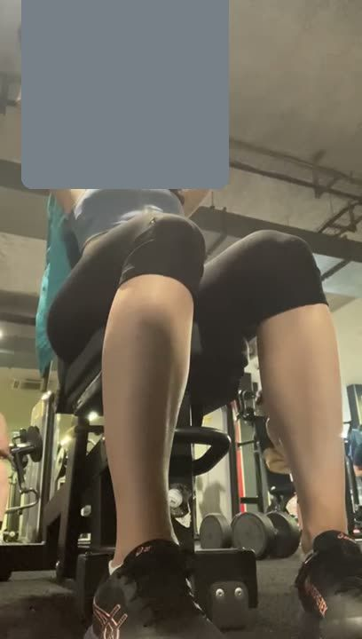
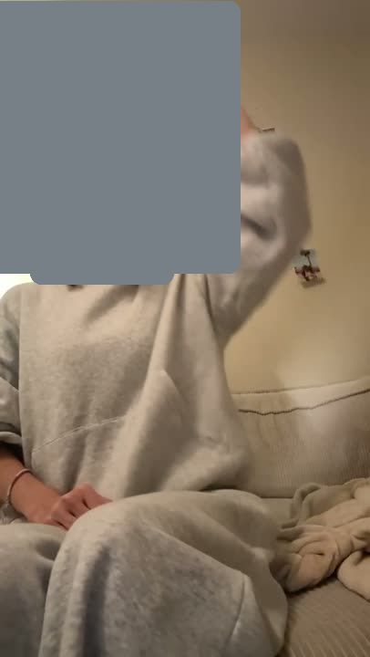
Corrections
⚠︎ Pas de charge en plus pour l'instant (21/10) : risque pour l'épaule.
Gainage : planche, pompes, crunchs
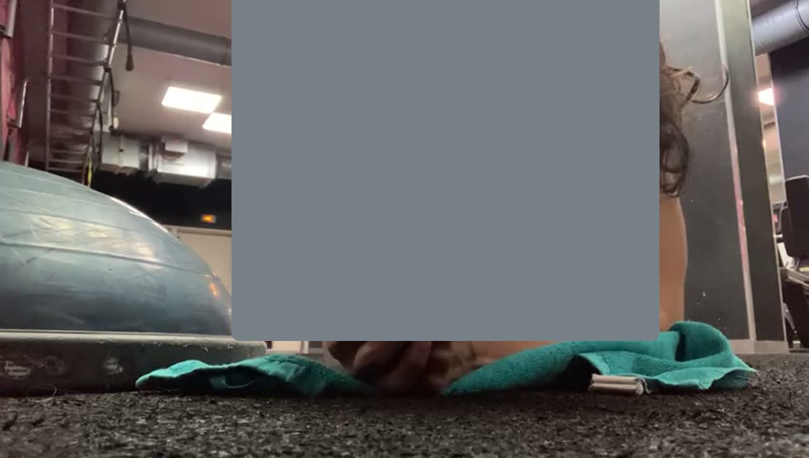
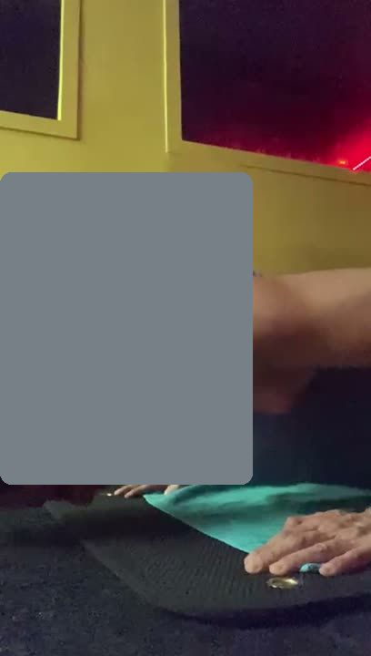